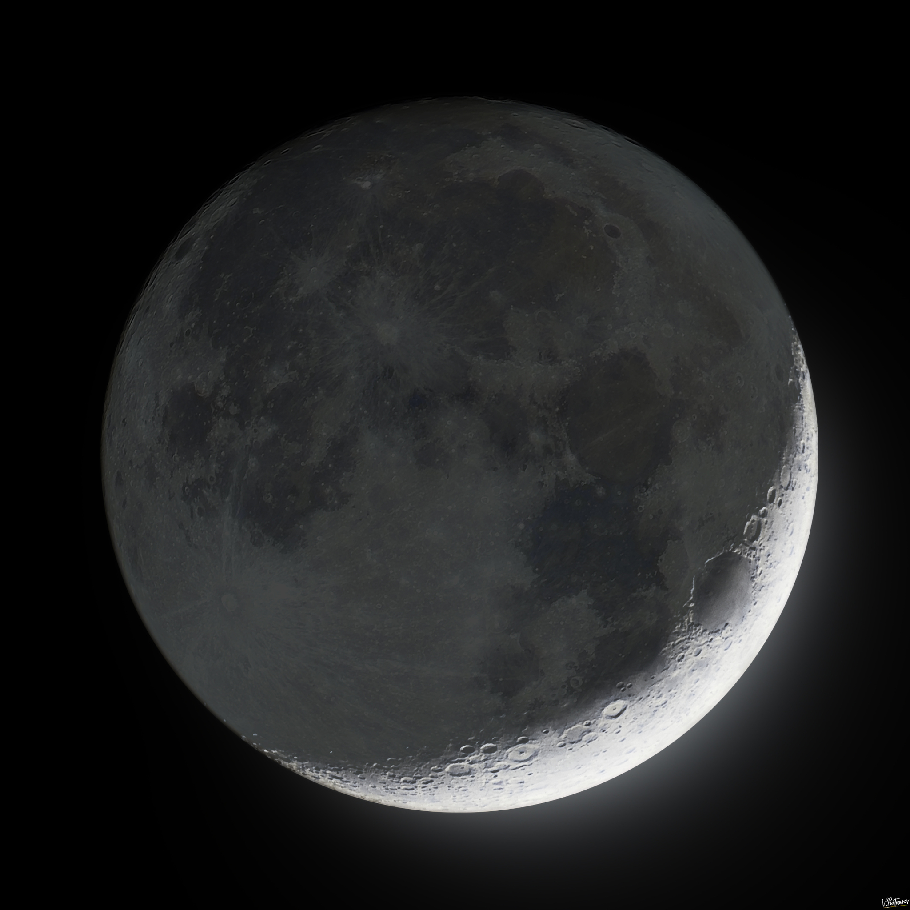

Kuu on Maa ainus looduslik kaaslane. See asub Maast keskmiselt umbes 385 000 km kaugusel. Kuu pind on kivine ja kaetud paljude kraatritega. Kuu ei tekita ise valgust, vaid peegeldab Päikese valgust. Maalt vaadates näeme Kuu erinevaid faase.